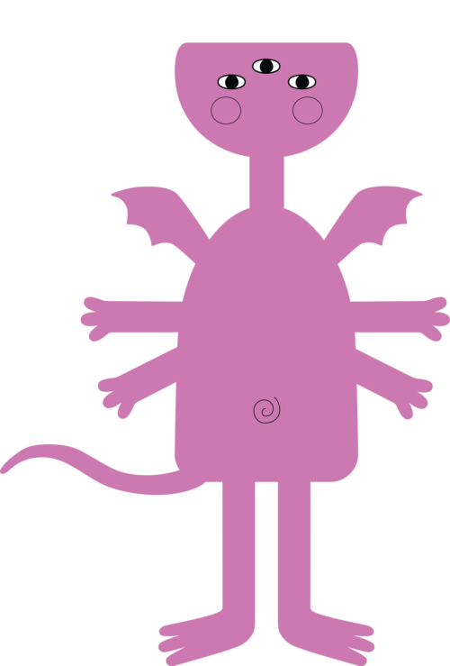
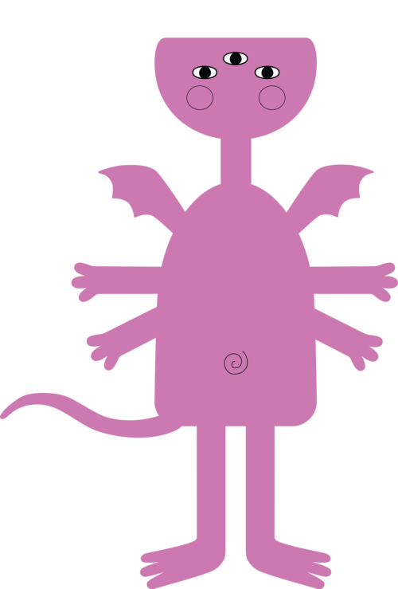

AIGA Monsters
Visualizing Design Census Data
HTML/CSS
javascript
data analysis
print design
interaction design
Team:
AIGA Monsters is a systems project visualizing data from the 2017 AIGA Design Census. Through an interactive web experience, users are able to generate monsters based on curated questions from the original survey to see how they fit in. We also created an on-boarding motion graphics piece as well as printed postcards to supplement our experience.
Role:
I worked to design the website and monster generation process utilizing HTML, CSS, Javascript, and jQuery, both interactively and visually.


Looking at the Data
We started off by analyzing the data using CSV explorer in search of different trends and correlations between the categories. From here, we began to discuss different ideas for how we wanted to visualize the data.
We limited the questions we wanted to include based on the number of possible answers as well as whether or not we could think of ways that we could represent the answers visually.

Interim Presentation
As we gained a better sense of the area we wanted to explore, we created a short presentation to receive feedback from our professor and our peers.
Essentially, we wanted to take a less direct approach to fully analyzing the data — rather, we wanted to personalize it. We found that especially in academic settings, it’s easy to get caught up in statistics such as salary, job security, etc. without really thinking about the individual. Through our project, we wanted to bring more focus to the personal aspects of each participant.
Form Generation
With our idea approved, we moved on to determining the visual appearance of each of the monsters. Our main concern was whether or not we should represent each answer literally or abstractly. To make our interactive experience less predictable and therefore more engaging, we tried to represent the information in a way that made sense, but was not overly obvious.
Initial Wireframes
We began sketching out a few screens for our website. While we were brainstorming, we decided upon three main points of interaction with the process: on-boarding, monster generation, and exploring other designers.
We decided to we wanted to have the on-boarding process in the form of a motion piece, and began to focus on our monster generation. A lot of the differences between each of these designs were how we were planning on displaying information on how many designers matched the user’s answers. As there was such a large pool of designers, we decided it would be too overwhelming to represent them all visually, and relied instead on using fractions.

Website Iterations
We started to code out the website with a focus on the monster generation section, as it made up most of the interactive portion of the site. We experimented with different visual styles and animations to make the experience more engaging for the user, while not being too overwhelming.


Generated Monsters
 



Print Piece
Using our website, we were able to generate a couple of monsters to create postcards of. These would essentially go hand-in-hand with the website, and the users would be able to keep their printed monster as a type of souvenir.


Reflection
As this was my first time going through such an extensive amount of information, I was able to learn quite a bit not only about analyzing data, but learning what is important to myself as a designer. It was really eye-opening to see how many different individuals there are, while comforting to know that there were those who shared similar demographics and interests with me.